The coaching app for volleyball clubs
Volley Skills replaces the per-player spreadsheet with one app for the whole season: player cards and development plans, physical testing, a shared drill library, live match scouting, team stats and awards.
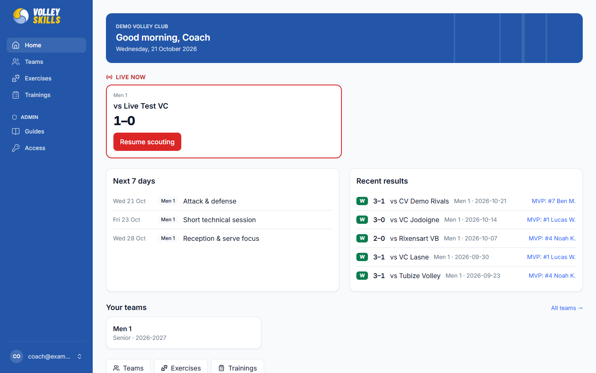
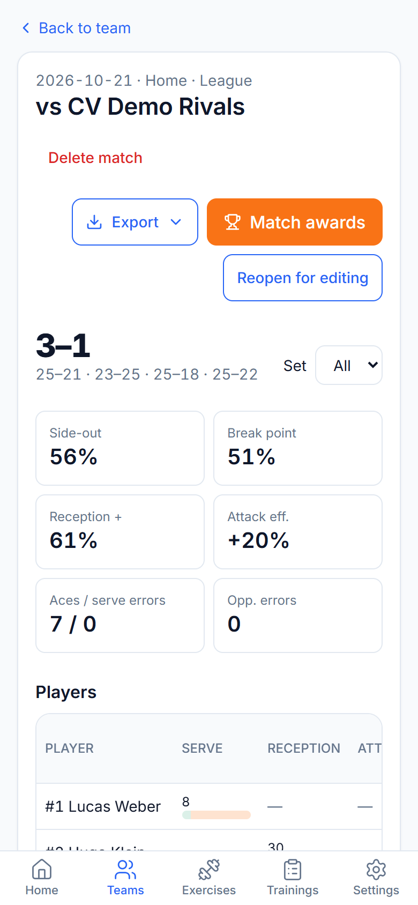
Overview
Coaches plan, train, test and play in separate tools today: a spreadsheet per player, drills in a notebook, stats on paper. Volley Skills joins it up, so every training, test and match feeds what you know about each player.
Rosters, 9 skills scored 1–10 with coach notes, colour-coded levels and guardian contacts.
Short-term and season objectives per player and per team, with status and coach comments.
Eight standard tests with history and trends, recorded live for a whole group from a phone.
A shared exercise library with court diagrams, trainings built from it and a team calendar.
Two taps per action on a phone, live stats during the match and a report after it.
Season KPIs, trends and leaderboards, and award cards to celebrate with the team.
Head and assistant coaches who run training and matches, and the club staff who look after several teams, from youth squads to the first team.
Teams & players
Each team has a roster in lineup order. Each player has a card that holds everything a coach needs, and nothing ends up lost in a spreadsheet tab again.
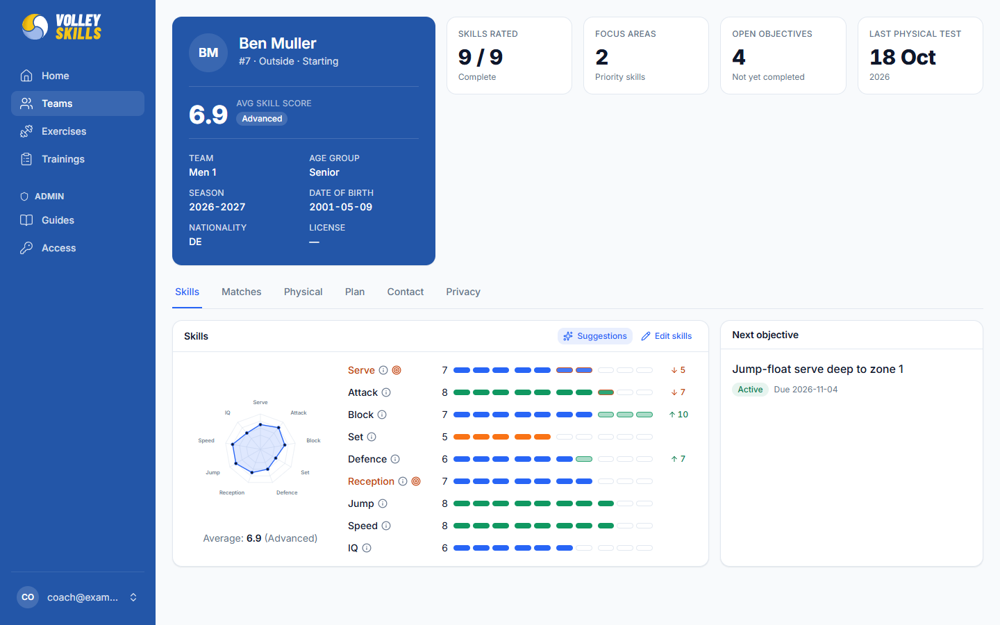
A player card: average skill score, level, focus areas, open objectives and the latest physical test.
Development & physical testing
Turn what you see in training into objectives with dates, and back them up with physical tests that show how each player is growing.
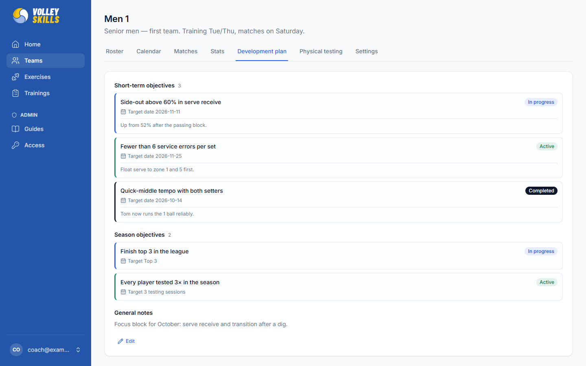
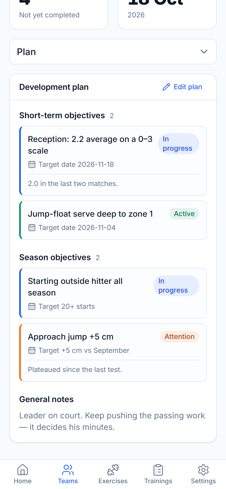
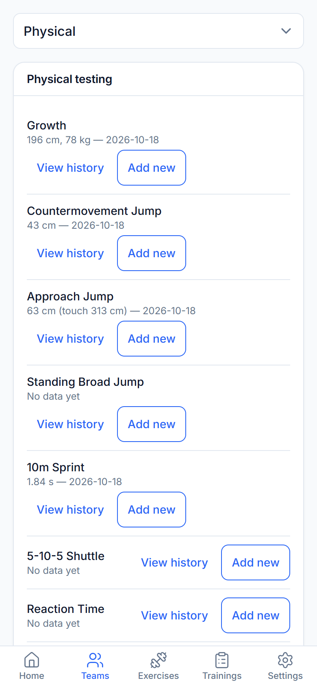
Live testing sessions. Test a whole group in the gym from one phone: pick the players, pick the test, and record results with the built-in stopwatches. Every result lands on the right player card.
Exercises, diagrams & trainings
The club keeps one shared library of exercises. Draw each drill on a court, combine drills into trainings, and put them on a team's calendar.
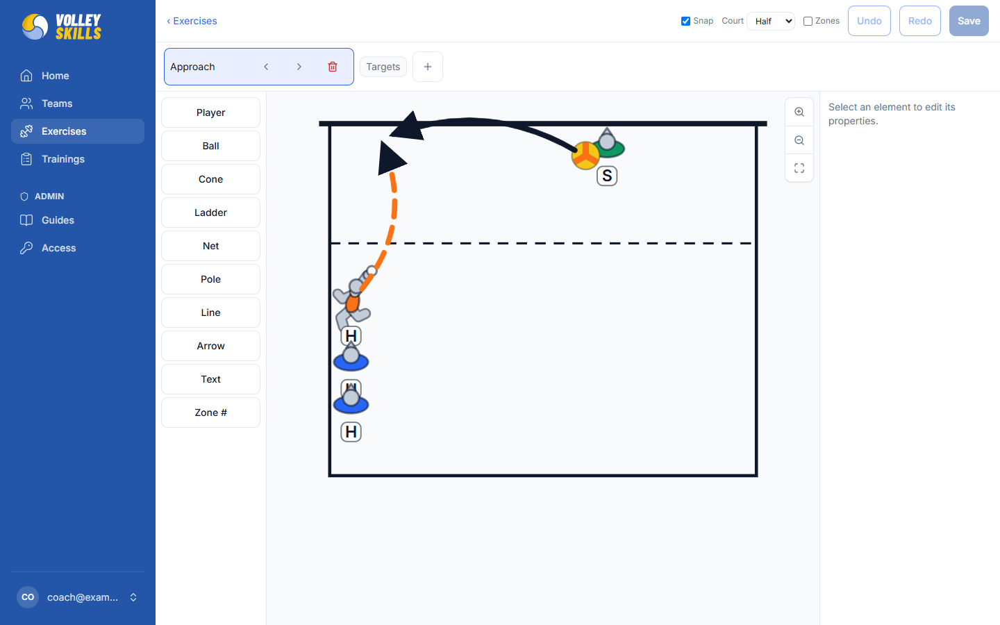
The court diagram builder: players, balls, cones, ladders, lines, arrows and text.
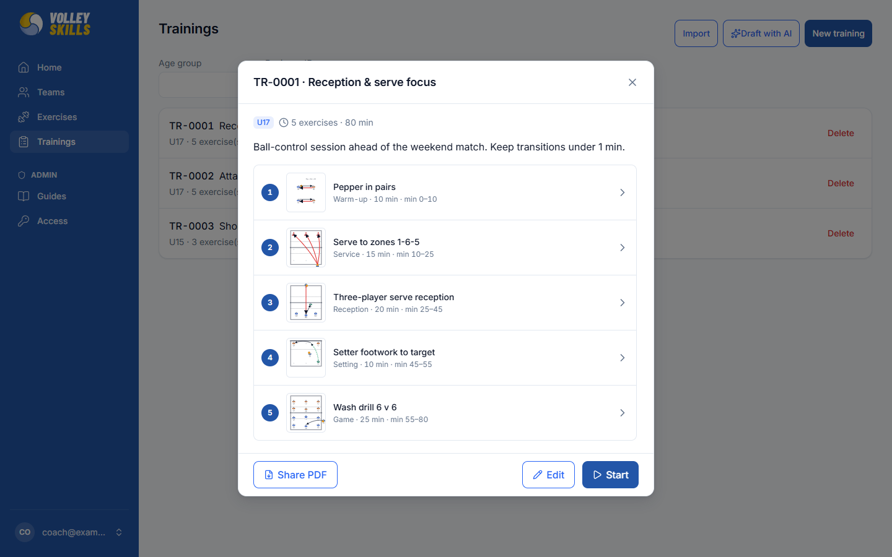
Match scouting
One person can scout a whole match from the bench, one-handed on a phone, and see who is struggling while there is still time to act.
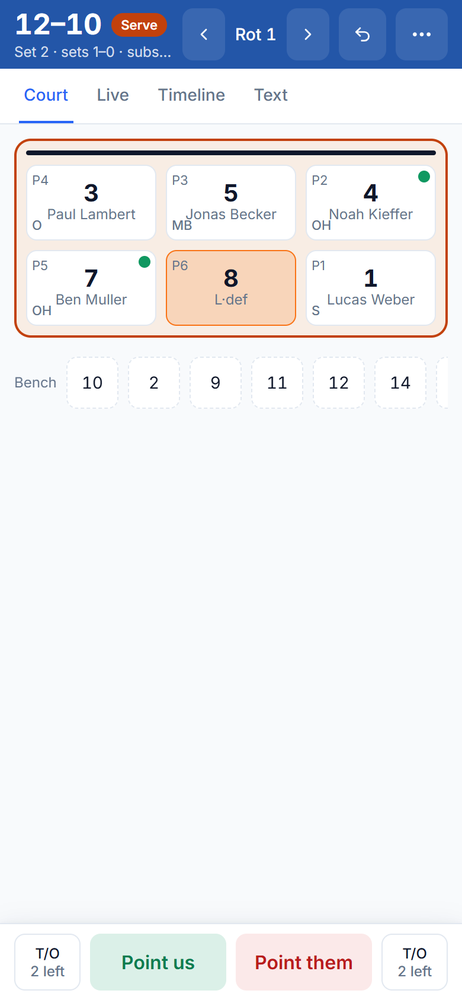
Live scouting on a phone.
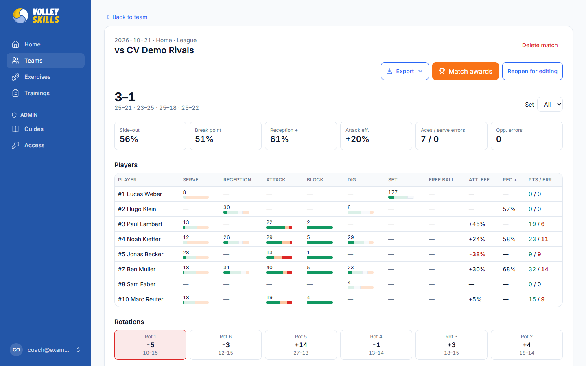
After the match: a report per player and per fundamental, rotations included, ready to export.
Stats & awards
Every scouted match adds up into team statistics. At the end of a match or a season, turn them into awards the players will want to share.
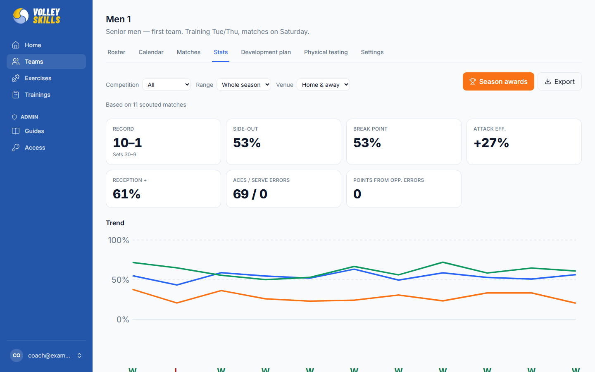
The team Stats tab: record, side-out, break point, attack efficiency and the trend over the season.
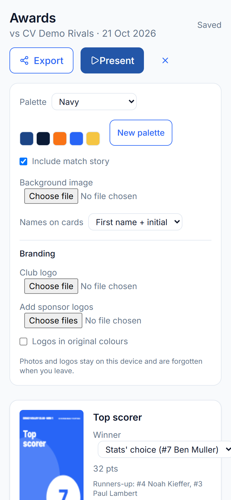
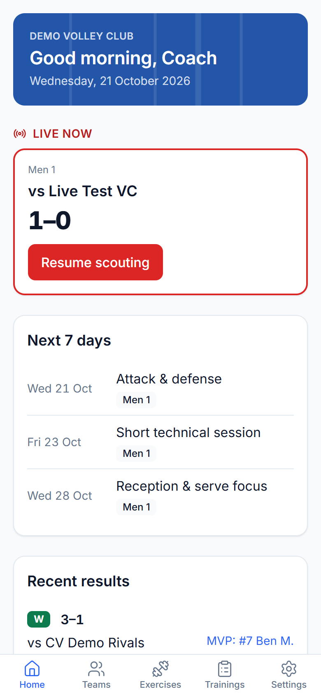
Built for clubs
Youth clubs hold data about children and their parents. Volley Skills is designed around that from the first line of code.
Coaches only see the teams they work with. Library, trainings and guides each have their own editors. New people request access and an admin approves them.
Sign in with a one-time email link or a Google account.
No analytics or third-party tracking scripts, ever. A plain-language privacy policy is public.
Consent per player, data export for a player or a whole team, and deletion when someone leaves.
AI features are optional and use your club's own provider. Names are replaced by shirt numbers before sending.
Works on phones, tablets and computers, in light or dark mode, and can be added to the home screen like an app.
Volley Skills is in early access. Ask for an invitation from the sign-in page, or write to us to get your club started.
alberto.valdes.rey.official@gmail.com